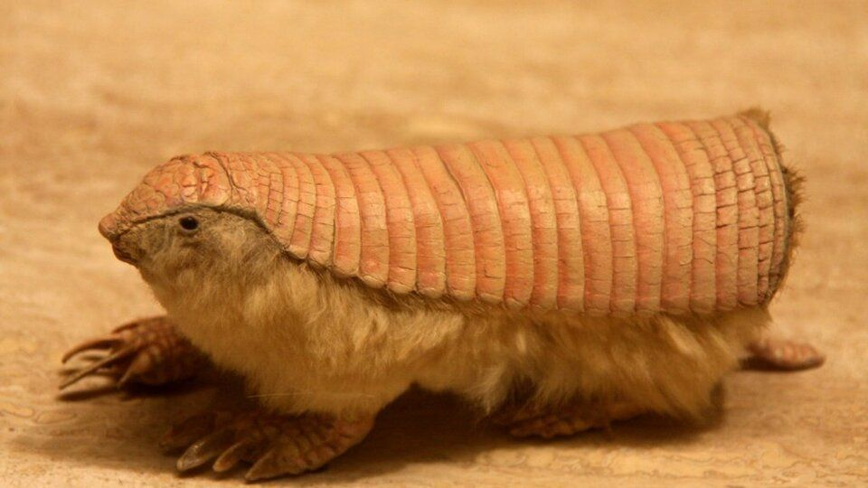

Los Pichiciego viven principalmente en zonas de suelos arenosos y secos de Argentina, especialmente en regiones con vegetación baja como matorrales y pastizales. Estos lugares les permiten excavar fácilmente túneles donde se refugian del calor y de los depredadores. En cuanto a su estilo de vida, se alimentan principalmente de hormigas, larvas, insectos y pequeños invertebrados, por lo que se consideran insectívoros. Son animales nocturnos, es decir, salen a buscar alimento principalmente durante la noche o cuando la temperatura es más fresca. Además, pasan gran parte de su tiempo bajo tierra utilizando sus fuertes garras para cavar.
2-Posee garras fuertes que le permiten excavar túneles rápidamente.
3-Es el armadillo más pequeño del mundo.
4-Vive la mayor parte del tiempo bajo tierra para protegerse del calor y de los depredadores.
5-Se alimenta principalmente de insectos, larvas y hormigas.